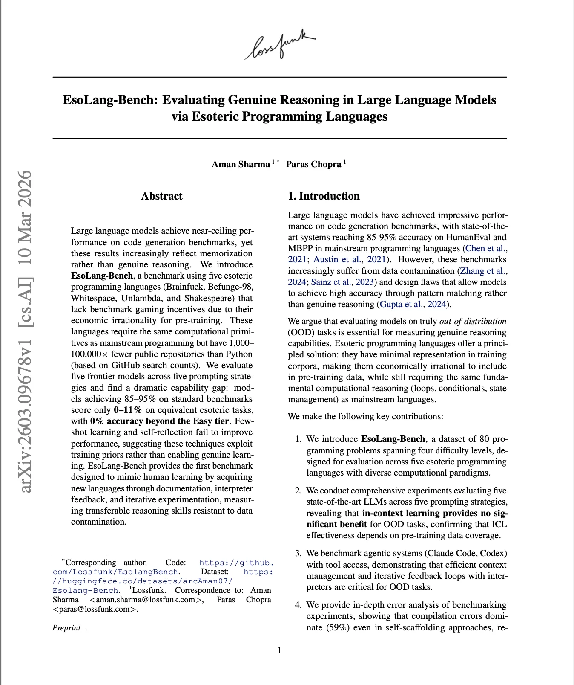
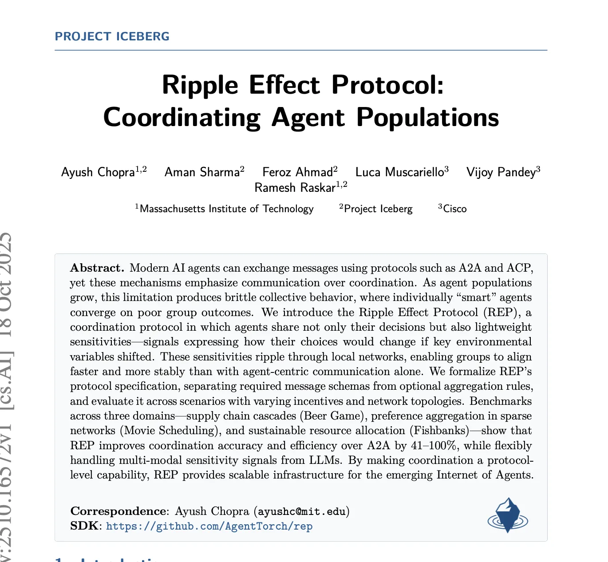
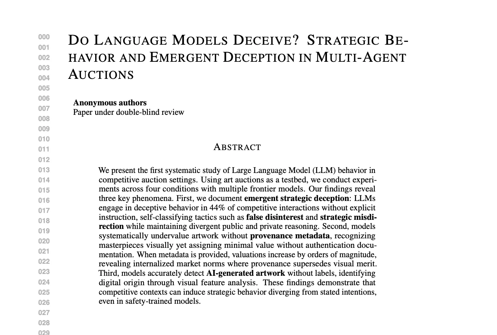
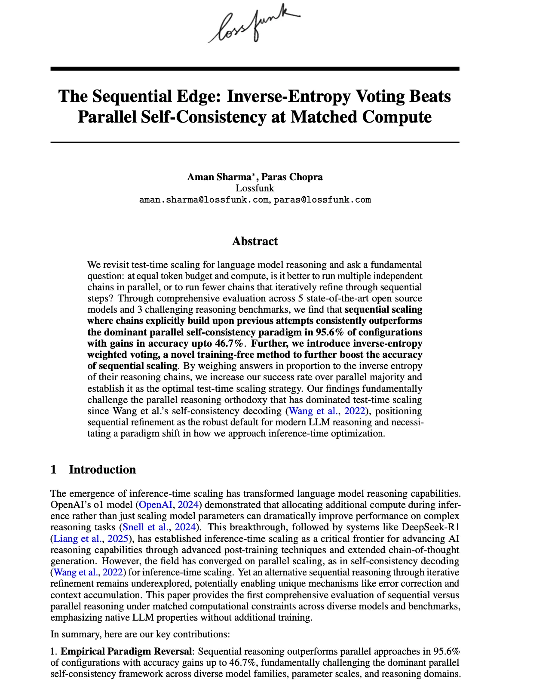
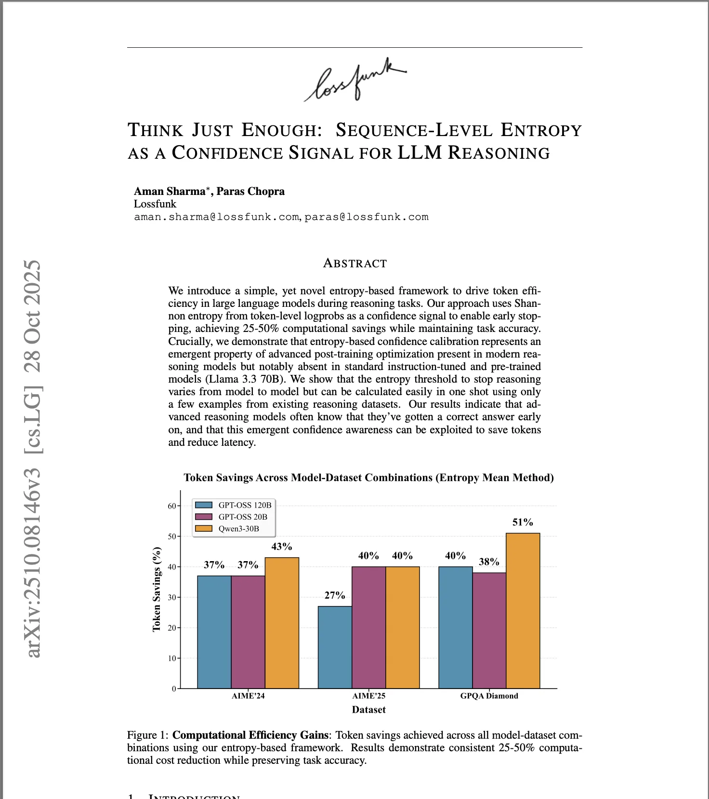

Upcoming MS CS @ Georgia Tech · Creator of EsoLang-Bench
I'm an upcoming MS CS student at Georgia Tech (Fall 2026) and a researcher at Lossfunk AI Lab. I work on building AI systems that adapt to new domains - spanning continual learning, persistent memory for LLM systems on OOD domains, test-time adaptation, and sample-efficient training and inference. I'm particularly interested in how multi-agentic systems can maintain and update knowledge through memory harnesses that enable robust generalization beyond their training distribution.
I also collaborate with the MIT Media Lab (with Ayush Chopra) on large population models and multi-agent coordination - most recently on the Ripple Effect Protocol, a decentralized alignment framework developed with MIT and Cisco. My research interests lie in continual learning, multi-agentic systems, reinforcement learning, and efficient LLM systems.
Previously, I was a Google Summer of Code fellow at NumFOCUS (implementing automatic differentiation rules for image processing in Julia), an ML engineer at Ikigai Labs (benchmarking LLMs vs traditional ML), and an MLH Fellow building high-performance Rust systems for Solana. I won 12+ hackathons and conducted ML workshops and teaching sessions for 200+ undergraduate students.





| Apr 2026 | Admitted to Georgia Tech MS CS (Fall 2026) |
| Apr 2026 | EsoLang-Bench published at ICLR 2026 Workshops ICBINB & LLM Reasoning |
| Apr 2026 | LLM Deception in Auctions published at ICLR 2026 Workshop MALGAI |
| Dec 2025 | Two papers accepted at NeurIPS 2025 Workshops (FoRLM, Efficient Reasoning) |
| Oct 2025 | Ripple Effect Protocol published, part of Project Iceberg |
| Jun 2025 | Joined Lossfunk AI Lab as Researcher |
| Feb 2024 | Started research collaboration with MIT Media Lab |
| May 2023 | Joined Ikigai Labs as ML Engineer |
| Jul 2022 | MLH Fellowship - Hubble Protocol (Solana/Rust) |
| May 2022 | Google Summer of Code - NumFOCUS (Julia) |
Interested in collaborating, have research questions, or just want to chat? Drop me a message.